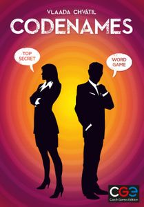

Codenames
Catégories

Description rapide
Les joueurs sont séparés en deux équipes. Devant eux sont disposées 25 cartes comportant un mot. Une personne de chaque équipe est l'« espion » et doit faire deviner à ses partenaires une partie de ces mots, mais sans jamais qu'ils ne tombent sur le mot « assassin ».
Description
Les deux « espions » de chaque équipe se placent côte à côte de façon à voir la carte qui indique quels mots ils doivent faire deviner. En face se trouvent leurs coéquipiers, et entre les deux 25 cartes réparties en 5 rangées de 5.
L'équipe qui commence a le désavantage de devoir faire deviner un mot de plus que l'autre équipe (9 au lieu de 8).
À chaque tour, l'« espion » de l'équipe donne un indice (constitué d'un mot), ainsi que le nombre de mots qu'il pense faire deviner avec cet indice. Par exemple, il peut dire « banane 3 » pour faire deviner les mots « fruit », « singe » et « jaune ». Ses coéquipiers désignent alors des mots un par un, qu'ils pensent correspondre à l'indice. Quatre cas de figure : - si le mot désigné est bien un mot à deviner, le mot est recouvert des couleurs de l'équipe ; - si le mot désigné appartient à l'autre équipe, il est recouvert des couleurs de l'équipe adverse ; - si le mot désigné n'appartient à aucune équipe, on passe au tour de l'équipe suivante ; - si le mot désigné est le mot « assassin », l'équipe en question perd immédiatement la partie.
Il est interdit de : - utiliser un mot de même famille qu'un mot présent sur la table de jeu ; - parler ou faire des signes à son coéquipier pour l'aider à deviner les mots ; - utiliser les mots sur les tables comme leurs homophones.